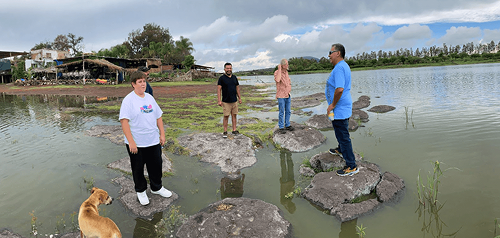
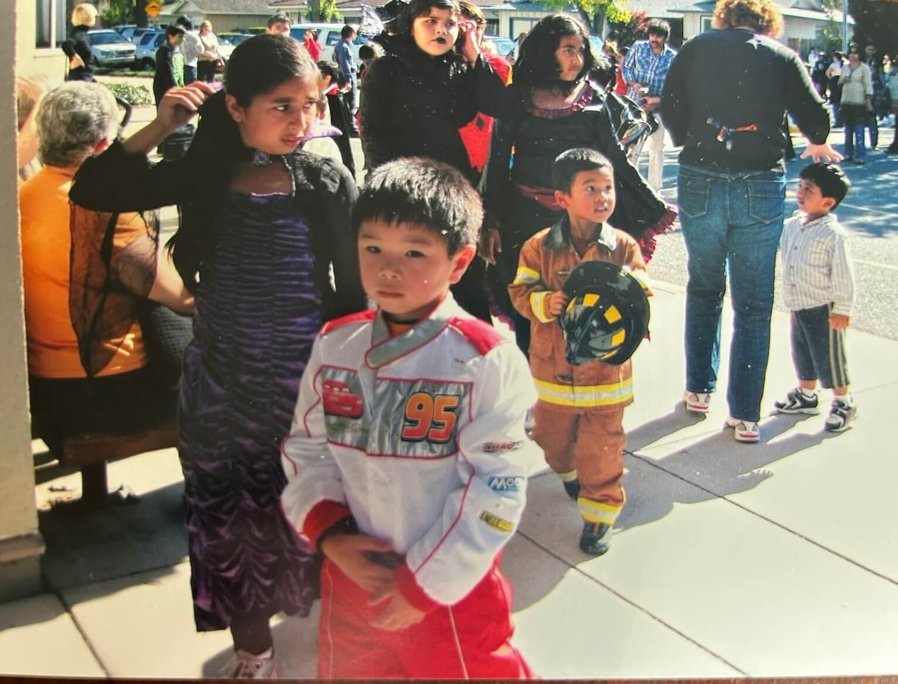

Student Image

The image showcases a family or friend hanging near a body of water. The rocks seem to be steps that the group of people stand on so that they don’t get wet. It looks to be at a tropical place because of the vegetation and trees,
The most interesting aspect of the image to me is the setting. The rocks seem to be perfectly placed for the people to stand on, preventing them from getting wet. The image also appears to be taken with a wide-angle camera. The placement of the people forms a “U” shape, which adds visual interest and draws the viewer’s eye into the scene.
The most obvious aspect of the image is the focal point, which is the people. The most mysterious aspect of the image is how the photographer is taking the picture. Is he standing on another rock, or on the shore?
I think that by playing with the shadows and hues of the image, the subject could be highlighted even more in contrast to the surrounding environment. Dimming the surrounding environment could help create a perspective that focuses the viewer’s attention on the four people and the dog.
My Image

The image is me as a kid wearing a race car outfit. It is interesting to me because it represents more than just a halloween costume. My love for cars started at a young age and has been something I’ve admired since childhood. That personal history adds meaning to the image. To most people, cars are just transportation , but for me it carries memories of aspiration and dreams.
This image relates to my overall collection as it will be a part of the collection of car memories. Together, the collection tells a story of how my childhood passion evolved into a serious interest in car engineering and performance.
My collection tells a story about how my childhood fascination turned into a long-term passion and hobby. Each car in the collection represents more than performance or appearance but tells a story of car design and the history behind it.
One way I could update the images to make them more compelling is by editing the car photographs in black and white, while keeping the image of my younger self in color. This contrast would draw attention to the childhood photo and emphasize its emotional significance and story.
Visual Thinking Strategies
Photographs can capture viewers’ attention and evoke strong emotional responses. A well-captured image can tell a story without using words, drawing viewers in and encouraging them to pause and reflect. As an amateur photographer, I have tried to practice this by following certain compositional strategies, such as the rule of thirds. This helps to draw attention and create focal points within the photo. Visual aids such as photos or illustrations help users visualize and understand a website, which can be essential for user conversion and preventing drop-off.
Visual Thinking ArticleOne website that I think does a great job at incorporating visuals and motion interaction is scout motors. The header contains a hero video, and as the user scrolls, an image appears and animates. This interaction encourages the viewer to continue scrolling and learn more about the company and its product. It engages the user through imagery and palace placement of illustrations. A major drawback of a design like this that is heavy on imagery and visuals is accessibility. Users who may have visual impairments could struggle to understand the content, as OCR technology may have difficulty reading the content.
Scout MotorsModals/Overlays/Dialog Window
After reading the article by Naema Baskanderi, I learned the importance of modals and overlays and their usecase. Initially they were implemented in order to save space and simplify interfaces. They are now being overused and have become distracting design elements that interrupt the user flow.
As a designer and user, this is concerning as we have been trained to instantly close modals without fully processing their content, which defeats their intended purpose. This makes me question the validity of modals and how we can redesign this to be useful to the user. A key takeaway from Baskanderi's article was the emphasis on intentional use and accessibility.
Best practices highlight how modals should support users rather than trap them. These best practices could be clear escape hatches and descriptive titles. It was interesting to read about accessibility guidance around keyboard navigation and ARIA roles. I realized that these are essential in order to create quality in the digital world. Overall, the article highlighted that modals should be used sparingly and thoughtfully in ways that make it accessible and easy to use for all users.
Modals/Overlays/Dialog ArticleCore Principles to Form Design
Conversion is the most essential purpose of a form or application. Form design should be aesthetically pleasing while also being easy to use in order to increase conversion. It is important to ask only for essential information and avoid unnecessary questions that prolong the time it takes users to complete the form.
Using single-column layouts allows for faster scanning, while breaking long forms into multiple steps with progress indicators helps reduce cognitive load. Grouping similar questions allows users to build momentum as they fill out the form.
Clearly marking required and optional fields gives users more flexibility. Clear labels and accessible feedback further reduce user frustration and help users complete forms confidently and efficiently. Overall, user-centered form design reduces friction and ultimately increases the likelihood that users will complete the form and convert.
Form Design ArticleI think Spotify’s sign-up form is well designed because it prioritizes user experience while encouraging conversion. The form uses a progress bar to set expectations and asks only for essential information, making the sign-up processeasy for users to complete.
Spotify Form